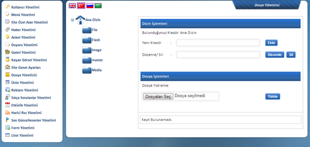

Siteniz üzerinden sunucuya yüklenen tüm dosyalarý bu alandan, baðlý olduklarý klasörler de dahil olmak üzere görebilir ve düzenleme yapabilirsiniz. Var olan klasörler dýþýnda yenilerini yaratarak gireceðiniz dosyalarý kendi tercihinize göre arþivlemeniz mümkündür. Göreceðiniz üzere bu alandan yeni klasör oluþturma, klasör silme, düzenleme, yeni dosya yükleme iþlemleri yapýlabilmektedir.
Tek bir dosya yüklenecek ise Tek Dosya Yükleme alanýndan, eðer birden fazla dosya yükleme iþlemi yapýlacaksa Çoklu Dosya Yükleme alanýndan iþlem yapýlmaktadýr. Dosya Seç ile bilgisayardaki dosya seçilerek ardýndan Yükle butonu ile sunucuya gönderme iþlemi gerçekleþtirilecektir. (Çoklu Dosya yükleme iþlemi ortadaki renkli alandan yapýlmaktadýr. Dosyalarý seçiniz komutu ile açýlan pencerede birden fazla dosyayý seçerek yükle diyebilirsiniz.)
Ýþlem tamamlandýðýnda dosyanýz hangi klasöre baðlý ise listede güncel þekilde yer alacak ve kapladýðý alana göre aþaðýda yer alan kota bilgisi yenilenecektir. Aþaðýdaki bar vasýtasýyla toplam alanýnýzý ve kalan boþ alan büyüklüðünü görmeniz mümkündür.